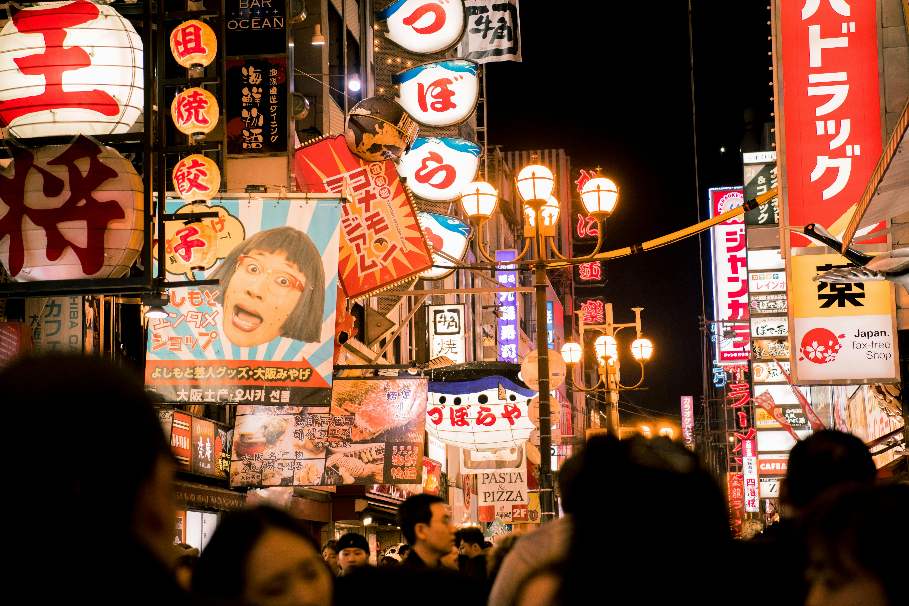

Top 3 Places to Visit in Osaka
Osaka is Japan’s kitchen and a city full of energy, where friendly locals, bold flavors, and vibrant streets define the experience. Three neighborhoods capture its essence best:
- Namba & Dotonbori, where neon lights, giant signboards, and sizzling street food line the canals in a buzzing entertainment district
- Osaka Castle Area, where historic charm meets peaceful greenery, centered around one of Japan’s most famous landmarks
- Umeda, a modern skyline of department stores, futuristic architecture, and sweeping views from towering observation decks
These areas offer a perfect mix of food, fun, history, and high-rises—ideal for first-time visitors wanting to feel the pulse of Osaka.
Namba & Dotonbori
Osaka’s electric entertainment heart, famous for its dazzling neon lights, giant signboards, and mouthwatering street food. The area truly comes alive after dark, with iconic sights like the Glico Man billboard reflecting off the canal, creating the perfect backdrop for photos and unforgettable memories.
Popular Activity 1: Walk Dotonbori & Hozenji Yokocho
Begin your exploration by strolling through the vibrant streets of Dotonbori, soaking in the colorful lights and lively atmosphere. Be sure to snap a photo with the legendary Glico Man sign, then explore hidden gems like Hozenji Yokocho, a narrow stone-paved alley lined with lantern-lit izakayas and the serene Hozenji Temple—a quiet moment amid the city’s energy.
Popular Activity 2: Ride the Ebisu Tower Ferris Wheel & Shop at Don Quijote

Get a fun bird’s-eye view of Osaka by riding the Ebisu Tower Ferris Wheel, uniquely built into the side of Don Quijote’s Dotonbori store. It’s a quirky and affordable way to admire the cityscape, especially at night.
After the ride, explore Don Quijote itself—one of Japan’s most iconic discount chains—for everything from souvenirs and snacks to cosmetics and electronics. With two locations in the Namba–Dotonbori area, it's a must-stop for both fun and shopping.
Popular Activity 3: Join a Street Food or Bar-Hopping Tour
Dive into Osaka’s reputation as Japan’s street food capital with a guided food or nightlife tour. Sample takoyaki, okonomiyaki, and kushikatsu at local stalls, then enjoy drinks and local snacks at tucked-away bars you’d never find on your own. It’s the best way to eat, drink, and laugh like a local in the city that loves to indulge.
| Activities | Admission Fee (per adult) |
Duration | Access Details |
|---|---|---|---|
| Walk Dotonbori & Hozenji Yokocho | Free | 30 min | 3 min walk from Namba Station |
| Ride the Ebisu Tower Ferris Wheel & Shop at Don Quijote | ¥600 | 30 min-1 hour | 5 min walk from Namba Station to the Ferris Wheel |
| Join a Street Food or Bar-Hopping Tour | ¥5,500–22,000 | 2.5-3 hours | Meets near Namba Station |
Osaka Catle Area

Osaka Castle Area is a serene oasis blending history and nature right in the heart of the city. Centered around the majestic Osaka Castle, this area offers a peaceful contrast to Osaka’s vibrant urban energy with its expansive parklands, historical sites, and seasonal cherry blossoms.
Popular Activity 1: Explore Osaka Castle & Museum
Visit the iconic Osaka Castle, a symbol of the city’s samurai heritage. Climb to the top for panoramic views of Osaka’s skyline, then explore the museum inside to learn about the castle’s fascinating history and the era of feudal Japan.
Popular Activity 2: Stroll Nishinomaru Garden
Relax in the beautifully landscaped Nishinomaru Garden, especially stunning during cherry blossom season. This spacious garden offers spectacular views of the castle’s main tower framed by blooming sakura trees, making it a perfect spot for photography and leisurely walks.
| Activities | Admission Fee (per adult) |
Duration | Access Details |
|---|---|---|---|
| Explore Osaka Castle & Museum | ¥1200 | 1.5-2 hours | 5-minute walk from Osaka Castle Park Station |
| Stroll Nishinomaru Garden | ¥200 | 1.5-2 hours | 5-minute walk from Osaka Castle Park Station |
Umeda
Umeda is Osaka’s bustling commercial hub, known for its soaring skyscrapers, luxury shopping, and major train stations connecting the city and beyond. It’s a blend of modern architecture, trendy malls, and vibrant nightlife—perfect for shoppers, foodies, and urban explorers.
Popular Activity 1: Visit Umeda Sky Building & Floating Garden Observatory
The Umeda Sky Building is one of Osaka’s most striking landmarks, famous for its futuristic design featuring two towers connected by a rooftop “floating garden.” Head up to the Floating Garden Observatory for sweeping 360-degree views of the city skyline, Osaka Bay, and even on clear days, distant mountains.
Sunset and nighttime visits are especially magical as the city lights sparkle below. The building also offers cafes and shops where you can relax while enjoying the view.
Popular Activity 2: Explore HEP Five & Its Iconic Ferris Wheel
HEP Five is a lively shopping and entertainment complex right in the heart of Umeda, popular among locals and tourists alike. It’s packed with trendy fashion stores, casual eateries, and entertainment spots including arcades and karaoke.
The highlight is the bright red Ferris wheel perched on the rooftop, offering fun, panoramic views of Osaka’s skyline. A ride here is a perfect way to see the city from a unique vantage point while enjoying the youthful energy of the area.
| Activities | Admission Fee (per adult) |
Duration | Access Details |
|---|---|---|---|
| Visit Umeda Sky Building & Floating Garden Observatory | ¥2000 | 1-1.5 hours | 10 minutes walk from JR Osaka station |
| Explore HEP Five & Its Iconic Ferris Wheel | ¥800 | 1.5-2 hours | 5 minute walk from Osaka Metro Umeda Station |